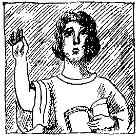
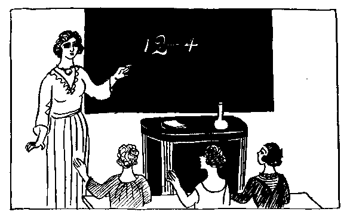

| 母の話 | |
| アナトール フランス | |
| (2012) | |
母の話
アナトール・フランス
岸田國士訳

前がき
アナトール・フランスは本名
をアナトール・チボーといい、フランスでも第
一流
の文学者であります。千八百四十四年、パリの商家
に生まれ、少年の頃から書物
の中で育ったといわれるくらい沢山
の本を読みました。それもただ沢山
の本を読んだというだけでなく、昔の偉
い学者や作家
の書いた本を実
に楽しんで読
んだのです。
彼は、詩
、小説
、戯曲
、評論
、伝記
、その他
いろいろなものを書
きましたが、すべて、立派
な作品として長く残
るようなものが多く、中でも、小説と随筆
とには、世界的
な傑作
が少なくありません。
ここにのせた「母の話
」は、その追憶風
の小説『ピエール・ノジエール』の中の一章
で、これだけ読
めばアナトール・フランスがみんなわかるというようなものではありませんけれど、まずまず、どんな人か見当
がつくでしょう。
非常に物
しりですが、わざわざむずかしいことをいわない。なんでもないことをいっているようで、よく読
んでみると、なかなか誰
にでもいえないことをいっている。ちょっと皮肉
なところがありますが、優
しい微笑
をたたえた皮肉で、世の中の不正や醜
さに、それとなく鋭
い鋒先
を向けています。
何よりも、力
み返
ること、大声
を立てることが嫌
いです。どんなことでも、静かに話せばわかり、また、静かに話
し合
わなければ面白
くないという主義
なのです。
熱情
も時には素晴
らしい仕事をさせる武器
ですが、冷静
は常に物の道理を考えさせる唯一
の力です。
アナトール・フランスは、また、世界で屈指
の名文家
です。文章は平明
で微妙
で調子
が整
っていて、その上自然な重々しさをもっています。これを澄
んだ泉の水にたとえた人がいますが、実際
フランス語でこれを読むと、もう百倍も美
しい文章だということがわかります。
千九百二十四年、すなわち大正十三年に、彼は死
にました。これで一時代
が終わったといわれるほど大きな事件
でありました。（訳者）
「わたしには、どうも想像力
っていうものがなくってね。」と、母はよくいったものだ。
「想像力
がない」と彼女
がいったのは、それは想像力
といえば、小説
を作るというようなことだけをいうものと思
っていたからで、その実
、母は自分
では知
らずにいるのだけれど、およそ文章
では書きあらわせないような、まことに愛
すべき、一種
特別
な想像力をもっていたのだ。母は家庭向
きの奥
さんという性
の人で、家
の中の用事にかかりっきりだった。しかし、彼女
のものの考え方には、どことなく面白
いところがあったので、家
の中
のつまらない仕事
もそのために活気
づき、潤
いが生
じた。母は、ストーヴや鍋
や、ナイフやフォークや、布巾
やアイロンや、そういうものに生命
を吹
きこみ、話をさせる術
を心得ていた。つまり彼女は、たくまないお伽話
の作者
だった。母はいろいろなお話
をして、僕
を楽
しませてくれたが、自分
ではなんにも考え出
せないと思っていたものだから、僕の持っていた絵本
の絵
を土台
にしてお話
をしてくれたものだ。
これから、その母の話
というのを一つ二つ紹介
するが、僕は出来
るだけ彼女の話しっ振
りをそのまま伝
えることにしよう。これがまた素敵
なのである。
学校
誰
がなんといっても、ジャンセエニュ先生
の学校
は、世界中
にある女の子の学校
のうちで一番いい学校
です。そうじゃないなんて思
ったり、いったりする者
があったら、それこそ神様を敬
わないで、人の悪口
をいう人だといってやります。ジャンセエニュ先生
の生徒
はみんなおとなしくて、勉強家
です。ですから、この小さな人たちがじっとお行儀
よくしているところは、見ていてこんないい気持
のことはありません。ちょうど、それだけの数
の小さな壜
が並
んでいるようで、ジャンセエニュ先生
は、その壜
の一つ一つへ学問という葡萄酒
をつぎ込
んでいらっしゃるのだという気
がします。
ジャンセエニュ先生
は高い椅子
に姿勢
を真直
にして腰掛
けていらっしゃいます。厳格
ですけれど、優
しい先生
です。髪
はひっつめに結
って、黒
の肩
マントをしていらっしゃる、もうそれだけで、先生
を敬
う気持
がおこると一しょに、先生
がどことなく好
きになるのです。
ジャンセエニュ先生
は、なんでもよくお出来
になるのですが、この小さな生徒
たちに先
ず計算
の仕方
をお教
えになります。先生
はローズ・ブノワさんにこうおっしゃいます。

「ローズ・ブノワさん、十二から四つ引
いたら、幾
つ残
りますか。」
「四つ。」と、ローズ・ブノワさんは答
えます。
ジャンセエニュ先生
はこの答
ではお気
に入
りません。
「じゃ、あなたは、エムリーヌ・カペルさん、十二から四つ引
いたら、幾
つ残
りますか。」
「八つ。」と、エムリーヌ・カペルさんは答
えます。
そこで、ローズ・ブノワさんはすっかり考
え込
んでしまいます。ジャンセエニュ先生
のところに八つ残
っているということはわかっていますが、それが八つの帽子
か、八つのハンケチか、それとも、八つの林檎
か、八つのペンかということがわからないのです。もうずいぶん前
から、そこのところがわからないで頭
を悩
ましていたのでした。六の六倍
は三十六だといわれても、それは三十六の椅子
なのか、三十六の胡桃
なのかわからないのです。ですから、算術
はちっともわかりません。
反対
に、聖書
のお話は大変
よく知っています。ジャンセエニュ先生
の生徒
のうちでも、地上
の楽園
とノアの方舟
の事
をローズ・ブノワさんのように上手
にお話しできる生徒
は一人もいません。ローズ・ブノワさんは、その楽園
にある花の名前
を全部
と、その方舟
に乗
っていた獣
の名前を全部知
っています。それから、ジャンセエニュ先生
と同じ数だけのお伽話
を知っています。鴉
と狐
の問答
、驢馬
と小犬の問答、雄鶏
と雌鶏
の問答などを残
らず知っています。動物
も昔
は口をきいたということを人
から聞
いても、ローズ・ブノワさんはちっとも驚
きません。動物
が今ではもう口
をきかないなんていう人
があったら、かえって驚いたでしょう。ローズ・ブノワさんには、自分
の家の大きな犬
のトムと小
さなカナリヤのキュイップの言葉
がちゃんとわかるのです。実際
、それはローズ・ブノワさんの思
っている通りです。動物
はいつの時代
にも口をききましたし、今
でもまだ口をきくのです。しかし、鳥
や獣
は自分のお友だちにしか口をききません。ローズ・ブノワさんは動物
が好
きで、動物
の方でもローズ・ブノワさんが好
きです。だからこそ鳥
や獣
のいうことがわかるのです。相手
の気持
をのみ込
むのには、お互
に仲
よくし合うことが何
よりです。
今日
も、ローズ・ブノワさんは読方
で習
ったところをちっとも間違
えずに諳誦
しました。それで、いいお点
をいただきました。エムリーヌ・カペルさんも、算術
の時間
がよく出来
たので、いいお点
をいただきました。
学校から帰
って来
ると、エムリーヌ・カペルさんは、いいお点
をいただいたということをお母さんにお話
ししました。それから、その後
でこういいました――
「いいお点
って、なんの役
に立
つの、ねえ、お母
さん？」
「いいお点っていうものはね、なんの役
にも立
たないんですよ。」と、エムリーヌのお母
さんはお答
えになりました。「それだからかえって、いただいて自慢
になるのです。そのうちに、あなたもわかってきますよ。いちばん尊
い御褒美
っていうのは、名誉
にだけなって、別
に得
にはならないような御褒美
です。」
大きいものの過
ち
道
というものは川
によく似
ています。それは、川
というものがもともと道
だからです。つまり、川というのは自然
に出来
た道で、人は七里
ひと跳
びの靴
をはいてそこを歩き廻
るのです。七里
ひと跳
びの靴
というのは船
のことです。だって、船
のことをいうのにこれよりいい名前
がありますか？ ですから、道
というのは、人間
が人間のためにこしらえた川のようなものです。
道
は、川の表面
のように平
で、綺麗
で、車
の輪
や靴
の底
をしっかりと、しかし気持
よく支
えてくれます。これはわたしたちのお祖父様方
が作
って下
さったものの中
でもいちばん立派
なものです。このお祖父様方
はお亡
くなりになった後
にお名前
が残
っていません。わたしたちは、ただそのお祖父様方
がいろいろいいことをして下
さったということを知
っているだけです。ほんとうに有難
いものですよ、道
っていうものは。そうでしょう、道
があるお蔭
で、方々
の土地
に出来る品物
がどんどんわたしたちのところへ運
ばれて来ますし、お友
だち同士
も楽
に往
ったり来
たりすることが出来ます。
それで今日
も、お友
だちのところへ行こうと思って、そのお友だちはジャンというのですが、ロジェとマルセルとベルナールとジャックとエチエンヌとは国道
へさしかかりました。国道
は日に照
らされて、きいろい綺麗
なリボンのように牧場
や畑
に沿
って先へと伸
び、町や村を通りぬけ、人の話では、船
の見える海まで続
いているということです。
五人の仲間
はそんな遠
くまでは行きません。けれども、お友
だちのジャンの家
へ行くのには、たっぷり一キロは歩かなければならないのです。
そこで五人は出
かけました。お母
さんにちゃんとお約束
をしたので、五人だけで行
ってもいいというお許
しが出たのです。ふざけないで歩くこと、決
して傍道
をしないこと、馬や車をよけること、五人のうちで一番
小さいエチエンヌのそばを決して離
れないこと、そういうお約束
をして来
たのです。
そして五人は出
かけました。一列
になって規則正
しく進んで行きます。これくらいきちんとして出かければ、申
し分
はありません。しかし、それほど立派
で一糸乱
れないなかに、一つだけいけないところがあります。エチエンヌが小
さすぎるのです。
エチエンヌは非常な勇気
を奮
い起こします。一生懸命
、足を速
めます。短
い脚
を精
いっぱいにひろげます。まだその上に、腕
を振
ります。しかし、なんといっても、小
さすぎます。どうしても仲間
について行けません。遅
れてしまいます。これはわかりきったことです。哲学者
といわれる人たちは、同じ原因
があればいつでも同
じ結果
になるということを知っています。しかし、ジャックにしてもベルナールにしても、マルセルにしても、またロジェにしても、哲学者
ではありません。四人は自分
の脚
に応
じた歩き方をします。可哀
そうなエチエンヌも、やっぱり自分の脚
相応
に歩
いているのです。調子
が揃
う筈
がありません。エチエンヌは走
ります。息
を切
らします。声を出します。それでも遅
れてしまいます。
大きい人たちは、つまりお兄
さんたちなんですから、待
ってやればいいのに、エチエンヌの足にあわせて歩
いてやればいいのにと思うでしょう。ところがそれは駄目
なのです。そんな心掛
は、この子
たちにはそもそも註文
するだけ無理
なのです。そういうところは、この子たちも大人
も同
じです。「進
めッ」と、世間
の強
い人たちはいいます。そうして弱
い人
たちをおいてきぼりにします。ですが、このお話
がどうなるか、おしまいまできいていらっしゃい。
ところで、この四人
の、大きい人たち、強
い人たち、元気
な人
たちは、急
に立
ちどまります。地面
に一匹
の生きものが跳
んでいるのを見つけたのです。なるほど跳
ぶはずです、その生
きものというのは蛙
で、道
ばたの草原
まで行こうと思っているのです。その草原は蛙
さんのお国です。蛙さんには大切
なお国です。そこの小川
のそばに自分のお屋敷
があるんですから。そこで蛙
さんは跳
んで行きます。
蛙というものは、天然自然
の細工物
として、これはたいしたものです。
この蛙は緑色
です。まるで青い木の葉のような恰好
をしています。そうして、そういう恰好
をしているので、なんだか素晴
らしくみえます。ベルナールとロジェとジャックとマルセルは、それを追
いかけはじめます。エチエンヌのことも、真黄色
な綺麗
な道のことも忘れてしまいます。お母
さんとのお約束
も忘
れてしまいます。もう四人は草原
の中へはいっています。しばらくすると、草が深
く茂
っている柔
かい地面
に、足がめり込
んでいくのがわかります。もう少し行くと、膝
のところまで泥
の中にはまり込
みます。草で見えなかったのですが、そこは沼になっていたのです。
四人は、やっとこさでそこから足をひきぬきました。靴
も、靴下
も、腓
も真黒
です。緑の草原
の精
が、いいつけを守
らない四人の者に、こんな泥
のゲートルをはかせたのです。
エチエンヌはすっかり息
を切らして四人に追
いつきます。四人がそんなゲートルをはかされているのを見ると、喜
んでいいのか、悲
しんでいいのかわからないような気持
です。そこで、大きい人や強
い人には大変
な災難
が降りかかって来
るということを、無邪気
な頭の中でいろいろと考
えてみます。ゲートルをはかされた四人の方
は、しおしおとひっかえします。だって、そんな恰好
をして、お友
だちのジャンのところへ行
けるはずがないでしょう？ 四人がお家へ帰
ったら、みんなのお母
さんは、その脚
をごらんになって、四人が悪
いことをしたということがちゃんとおわかりになるでしょう。反対
に、小
さなエチエンヌの清浄無垢
なことは、その薔薇
いろの腓
に、後光
のように現
れているでしょう。
挿絵 大野隆徳
底本：「日本少国民文庫 世界名作選（一）」新潮社
１９９８（平成10
）年12
月20
日発行
底本の親本：「世界名作選（一）」日本少國民文庫、新潮社
１９３６（昭和11
）年2
月8
日
※大野隆徳（おおのたかのり）（1886-1945）の著作権は切れていると考えて挿絵もいれました。
入力：川山隆
校正：門田裕志、小林繁雄
２００８年1
月15
日作成
青空文庫作成ファイル：
このファイルは、インターネットの図書館、青空文庫（http://www.aozora.gr.jp/）で作られました。入力、校正、制作にあたったのは、ボランティアの皆さんです。